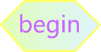

Welcome To The Game:
DON'T Tap The White Tile!
If you see this text,your web browser DON'T support HTML5 canvas!

Press the Button
or "R" to start!
During the game,
you need to press
the right key
where black tiles
fall to the bottom!